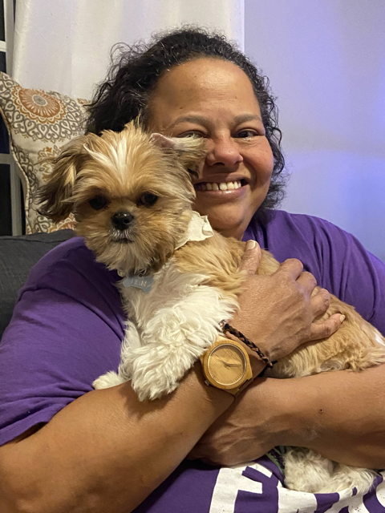
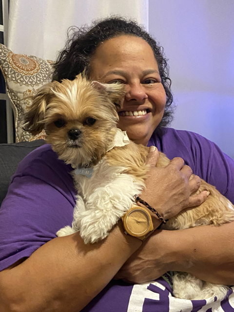

Hi there! I'm Shayla Logan.
I started in the tech indsutry as a mainframe programmer. Later, I spent over 15 years as a software tester and Business Analyst before transitioning back into coding.
I love working as a web developer and seeing the impact a website can have on the world around me.
In my spare time I can be found woodworking, cooking, listening to a wide variety of music, watching psychological-thriller movies, and cuddling with my two dogs.
 
